Date Taken: Fall 2025
Status: Work in Progress
Reference: LSU Professor (Name), ChatGBT
Simplest way to remember:
Probability = Predicting the future
Statistics = Analyzing the past
A probability space is a mathematical construct that provides a formal model for randomness and uncertainty. It consists of three main components:
A probability space can describe either discrete or continuous random variables. P(Ω) = 1 -> The total probability of all possible outcomes is 1 (something must happen).
A probability distribution is a function that gives the probabilities of occurrence of possible events. A probability distribution tells us how different outcomes are. It is like a map that shows where the probability mass or weight is placed among the possible outcomes.
A distribution is a function that gives probability of each event occurring.
Ex. Roll a 6 sided die (Ω = {1, 2, 3, 4, 5, 6}). Each outcome has a probability of 1/6. This distribution is uniform because all outcomes are equally likely.
A Probability Density Function (PDF) is a function that describes the likelihood of a continuous random variable taking on a specific value. The PDF provides a way to understand how the probability is distributed over the range of possible values for the random variable.
Suppose the waiting time for a bus follows a uniform distribution over the next 10 minutes. The PDF for this uniform distribution is constant over the interval [0, 10], meaning the bus is likely going to arrive any moment within that time frame. The waiting time is a Random Variable.
What is the probability that the waiting time is between 2 and 3 minutes? That will be 0.1 because the total length of the interval [2, 3] is 1 minute, and the PDF is constant at 0.1 over the interval [0, 10]. What is the probability that the waiting time is exactly t minutes? (e.g. t = 1.5). This will be 0 because the probability of a continuous random variable taking on any specific value is always 0.
PDF equation:
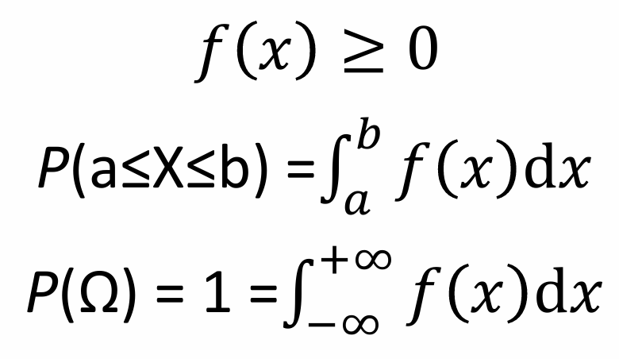
The normal distribution is a continuous probability distribution (infinitely many possible values) characterized by its bell-shaped curve. It is defined by two parameters: the mean (μ) and the standard deviation (σ). The mean determines the center of the distribution, while the standard deviation controls the spread.
In a normal distribution:
The normal distribution is important in statistics because of the Central Limit Theorem, which states that the sum of a large number of independent random variables tends toward a normal distribution, regardless of the original distribution of the variables.
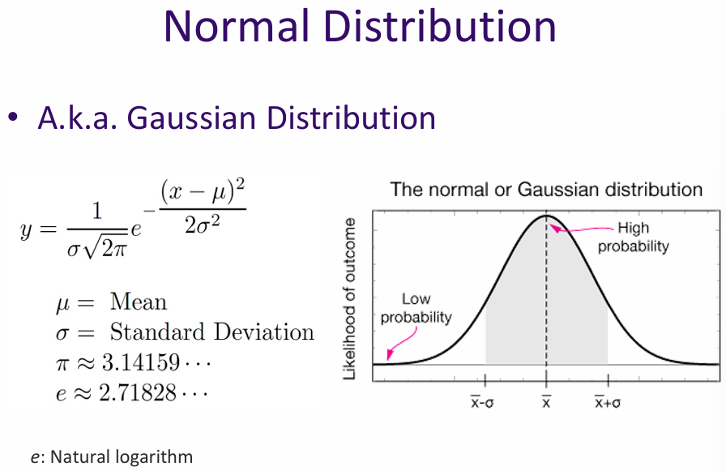
Central Limit Theorem: If you add up lots of small, independent effects, the result tends to be normally distributed. Example, your height is affected by genes, nutrition, environment, random factors. Each factor is small, random, and independent. Add them together → heights roughly follow a normal distribution.
Why AI/ML cares? When data is roughly normal, many statistical methods and machine learning algorithms perform better. They rely on the assumption of normality for inference, making it easier to model and predict outcomes.
Marginal probability refers to the probability of an event occurring, irrespective of the outcomes of other variables. In the context of joint distributions, it is obtained by summing or integrating the joint probability distribution over the other variables.
For example, consider a joint distribution of two random variables X and Y. The marginal probability of X is found by summing (or integrating) the joint probabilities over all possible values of Y:
P(X) = Σ P(X, Y) for all Y
Marginal probabilities are useful for understanding the behavior of individual variables within a larger system.
Example: Temperature and weather → T and W are the random variables representing temperature and weather conditions, respectively.
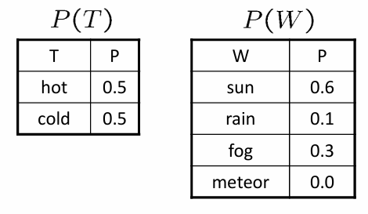
Joint probability refers to the probability of two (or more) events occurring simultaneously. For two random variables X and Y, the joint probability is denoted as P(X, Y) and can be visualized using a joint probability distribution.
Joint probabilities are useful for understanding the relationships between variables and for making predictions based on the values of multiple variables.
Example: What is the chance that it is both hot and sunny? 0.4 → P(A,B) = P(B,A)
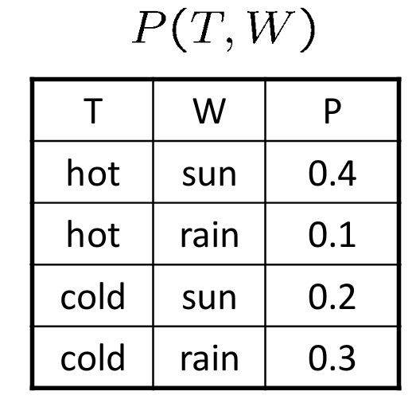
Conditional probability refers to the probability of an event occurring given that another event has already occurred. It is denoted as P(A | B), which reads "the probability of A given B."
For example, consider the random variables T (temperature) and W (weather condition). The conditional probability P(W | T) represents the likelihood of a specific weather condition occurring given a specific temperature.
Conditional probabilities are useful for updating our beliefs about the world based on new evidence.
Joint probability considers the likelihood of two events happening together, while conditional probability focuses on the likelihood of one event given the occurrence of another. P(A,B) = P(A | B) * P(B) → The chance that A happens when B happens, times the chance that B happens.
Chain rule of joint probability: P(A,B,C,...) = P(A|B,C,...) * P(B|C,...) = P(A|B,C,...) * P(B|C,...) * P(C,...)
P(A, B) = P(A) * P(B) → The chance that A happens and B happens together is the chance that A happens times the chance that B happens.
Two events A and B are independent if the occurrence of one does not affect the probability of the other. Mathematically, this is expressed as P(A | B) = P(A) and P(B | A) = P(B).
Independence is a key assumption in many statistical models and simplifies the analysis of complex systems.
Correlation measures the strength and direction of a linear relationship between two variables. It is quantified by the correlation coefficient, which ranges from -1 to 1. A correlation coefficient of 1 indicates a perfect positive linear relationship, -1 indicates a perfect negative linear relationship, and 0 indicates no linear relationship.
Correlation is useful for identifying relationships between variables and for making predictions based on those relationships. However, it is important to note that correlation does not imply causation (causation means that one event is the result of the occurrence of another event).
Example: Ice cream sales and drowning incidents are correlated because both increase during the summer. However, buying ice cream does not cause drowning; the underlying factor is the hot weather.
Example: Car insurance and zip code are correlated because certain areas may have higher rates of accidents or theft. However, living in a particular zip code does not cause someone to need car insurance; the underlying factor is the risk associated with that area.
Example: Heart risk and age are correlated because the risk of heart disease tends to increase with age. However, being older does not directly cause heart disease; other factors such as lifestyle and genetics play a role.
Correlation is a statistical measure that describes the extent to which two variables change together. It is important to note that correlation does not imply causation; just because two variables are correlated does not mean that one causes the other.
\[ \mathrm{Cov}(X,Y) = \frac{\mathbb{E} \big[ (X - \mathbb{E}[X]) (Y - \mathbb{E}[Y]) \big]}{\sigma_X \, \sigma_Y} \]
The law of total probability states that if you have a set of mutually exclusive events that cover all possible outcomes, the total probability of any event can be found by considering all the different ways that event can occur.
\[ \mathbb{E}_n \big[ P(A, B_n) \big] = \mathbb{E}_n \big[ P(A \mid B_n) \, P(B_n) \big] \]
The probabilities that A happens under all possible circumstances of B
Bayes' theorem describes the probability of an event, based on prior knowledge of conditions that might be related to the event. It is expressed mathematically as:
\[ P(A \mid B) = \frac{P(B \mid A) \, P(A)}{P(B)} \]
P(A|B) is the probability of A given B, P(B|A) is the probability of B given A, P(A) is the prior probability of A, and P(B) is the prior probability of B.
Bayes' theorem is widely used in various fields, including statistics, machine learning, and artificial intelligence, for updating probabilities based on new evidence.
Example: Medical diagnosis. Let A be the event that a patient has a disease, and B be the event that the patient tests positive for the disease. We want to find P(A|B), the probability that the patient has the disease given a positive test result. Using Bayes' theorem, we can calculate this probability based on the sensitivity and specificity of the test, as well as the prevalence of the disease in the population.
Example: Spam filtering. Let A be the event that an email is spam, and B be the event that the email contains certain keywords. We want to find P(A|B), the probability that an email is spam given that it contains those keywords. Using Bayes' theorem, we can update our belief about whether an email is spam based on the presence of specific keywords and the overall frequency of spam emails.
Example: Assume in general there is 50% chance of rain, when it rains there is always cloud cover. In general there is 80% chance we see cloud. We want to find P(rain|cloud) using Bayes' theorem which in this cause P(rain|cloud) = \( \frac{P(cloud|rain) \, P(rain)}{P(cloud)} = \frac{(1) \cdot (0.5)}{0.8} = 0.625 \), this is because P(cloud|rain) = 1, P(cloud) = 0.8, and P(rain) = 0.5. We know there is an initial 50% chance of rain, and an initial 80% chance of cloud. P(cloud|rain) is 1 because when it rains, we always see cloud.
Linear algebra is a branch of mathematics that deals with vectors, vector spaces, and linear transformations. It is fundamental to many areas of science and engineering, particularly in machine learning and artificial intelligence.
A vector is an ordered list of numbers that can represent a point in space or a direction. Vectors can be added together and multiplied by scalars (numbers) to create new vectors.
A group of real numbers, a coordinate in a high-dimensional space, a direction (displacement) in a high-dimensional space
Example: RGB color space
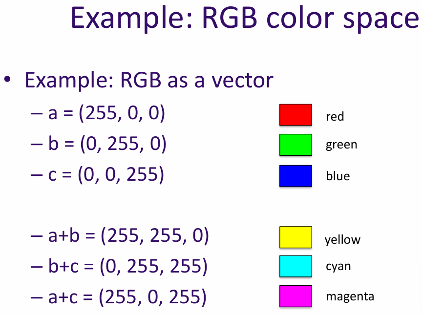
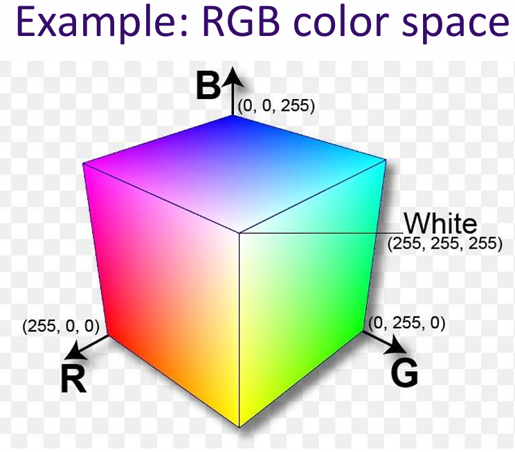
Why we care about vectors in AI? Vectors are essential in AI because they allow us to represent complex data in a structured way. For example, in image processing, an image can be represented as a vector of pixel values. This representation makes it easier to apply mathematical operations and algorithms to analyze and manipulate the data.
Associativity is a property of certain operations that allows us to group operands in different ways without changing the result. In the context of vectors, addition is associative:
(u + v) + w = u + (v + w)
Commutativity is a property of certain operations that allows us to change the order of operands without changing the result. In the context of vectors, addition is commutative:
u + v = v + u
Distributivity is a property that relates two operations, typically addition and multiplication. In the context of vectors, scalar multiplication is distributive over vector addition:
a(u + v) = au + av
In the context of vectors, scalar multiplication is distributive over field addition:
(a + b)v = av + bv for all a, b ∈ F and v ∈ V
The identity element is a special element in a vector space that, when combined with any vector, leaves the vector unchanged. In the context of vector addition, the identity element is the zero vector (0 ∈ V):
v + 0 = v for all v ∈ V
Scalar multiplication is compatible with field multiplication, meaning that multiplying a vector by a scalar and then by another scalar is the same as multiplying the scalars together first:
a(bv) = (ab)v for all a, b ∈ F and v ∈ V
The identity element of scalar multiplication is the number 1. When a vector is multiplied by 1, it remains unchanged:
1v = v for all v ∈ V, where 1 denotes the multiplicative identity in the field F.
The inner product (or dot product) is a way to measure the similarity between two vectors. It is calculated by multiplying corresponding elements of the vectors and summing the results.
Example: If u = [1, 2, 3] and v = [4, 5, 6], then the inner product u · v = 1*4 + 2*5 + 3*6 = 32.
Why we care about inner products in AI? Inner products are important in AI because they provide a way to measure similarity between data points. For example, in recommendation systems, the inner product can be used to determine how similar two users are based on their preferences.
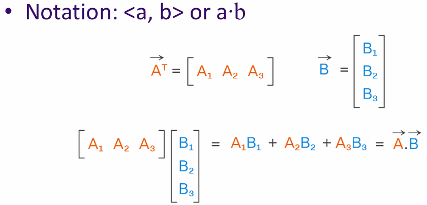
Cosine similarity is a measure of similarity between two non-zero vectors. It is defined as the cosine of the angle between the two vectors. When two vectors are orthogonal (orthogonal means perpendicular) to each other, a · b = 0
similarity(a,b) = \( \frac{a \cdot b}{|a| \, |b|} \)
Why we care about cosine similarity in AI? Cosine similarity is particularly useful in high-dimensional spaces, where it helps to identify similar items regardless of their magnitude. This is important in applications like document similarity, where the length of the documents may vary significantly.
The norm of a vector is a measure of its length or magnitude. Length of a vector: \[ \|x\|_2 = \sqrt{x_1^2 + x_2^2 + \cdots + x_n^2} = \left( \sum_{i=1}^{n} x_i^2 \right)^{1/2} \]
Lₚ norm: \[ \|x\|_p = \left( \sum_{i=1}^{n} |x_i|^p \right)^{1/p} \]
Unit ball: \[ \|x\|_p = \left( \sum_{i=1}^{n} |x_i|^p \right)^{1/p} \]
What is L₀ norm? An L₀ norm is a measure of the number of non-zero elements in a vector. It is not a true norm because it does not satisfy the properties of a norm, but it is often used in sparse representation and compressed sensing.
A matrix is a rectangular array of numbers arranged in rows and columns. Matrices can be added together, multiplied by scalars, and multiplied by other matrices.
A matrix is a linear transformation that maps vectors from one vector space to another.
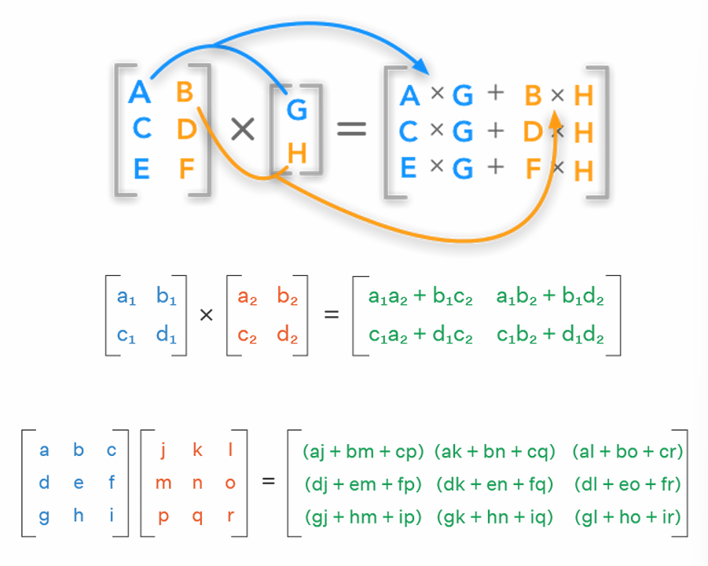
A linear transformation is a function between two vector spaces that preserves the operations of vector addition and scalar multiplication. In other words, if T is a linear transformation, then for any vectors u and v, and any scalar a:
Linear transformations can be represented using matrices. If A is a matrix representing a linear transformation T, then for any vector v: \[ T(v) = Av \]
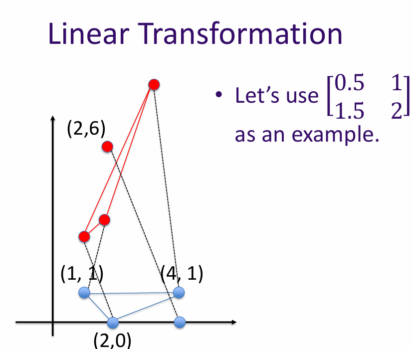
The rank of a matrix is the dimension of the vector space generated by its rows (or columns). In other words, it is the maximum number of linearly independent row (or column) vectors in the matrix.
Why do we care about rank in AI? The rank of a matrix can provide insights into the data it represents. For example, in dimensionality reduction techniques like PCA (Principal Component Analysis), the rank helps determine the number of principal components to retain.
\[ \text{rank} \begin{bmatrix} 0.5 & 1 \\ 1.5 & 2 \end{bmatrix} = 2 \quad \text{(It maps to a 2D space)} \] \[ \text{rank} \begin{bmatrix} 0.5 & 1 \\ 1 & 2 \end{bmatrix} = 1 \quad \text{(It maps to a 1D space)} \]
An identity matrix is a square matrix with ones on the diagonal and zeros elsewhere. \[ I = \begin{bmatrix} 1 & 0 \\ 0 & 1 \end{bmatrix} \quad \text{(It always maps the vector to itself)} \]
Scaling by c: \[ cI = \begin{bmatrix} c & 0 \\ 0 & c \end{bmatrix} \]
It is denoted as Iₙ for an n x n identity matrix. The identity matrix has the property that when it is multiplied by another matrix, it leaves the other matrix unchanged: \[ I_n A = A I_n = A \]
Identity matrices are important in linear algebra and are used in various applications, including solving systems of linear equations and in the context of neural networks.
(x,y) = \( (r*\cos(\theta), r*\sin(\theta)) \)
A rotation matrix is a matrix that is used to perform a rotation in Euclidean space. For example, in 2D space, a rotation matrix for an angle θ is given by: \[ R(\theta) = \begin{bmatrix} \cos(\theta) & -\sin(\theta) \\ \sin(\theta) & \cos(\theta) \end{bmatrix} \]
Rotating back by -θ would be done using the inverse rotation matrix:
\(
R(-\theta) =
\begin{bmatrix}
\cos(-\theta) & -\sin(-\theta) \\
\sin(-\theta) & \cos(-\theta)
\end{bmatrix}
\) = \(
\begin{bmatrix}
\cos(\theta) & \sin(\theta) \\
-\sin(\theta) & \cos(\theta)
\end{bmatrix}
\), BA = I, B = A⁻¹
A simple neural network consists of an input layer, one or more hidden layers, and an output layer. Each layer is made up of neurons (or nodes) that process the input data and pass it on to the next layer.
The connections between the neurons are represented by weights, which are adjusted during the training process to minimize the error between the predicted output and the actual output.
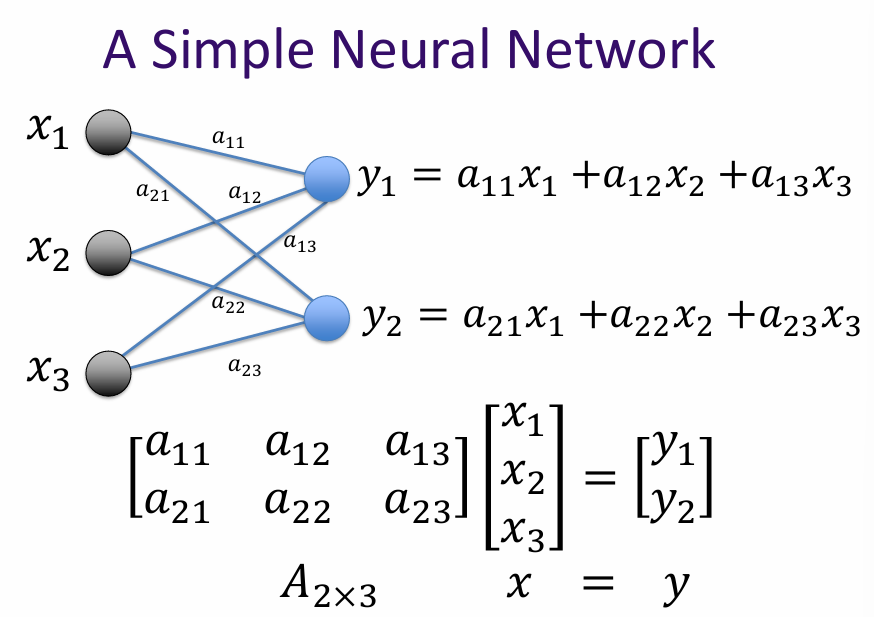
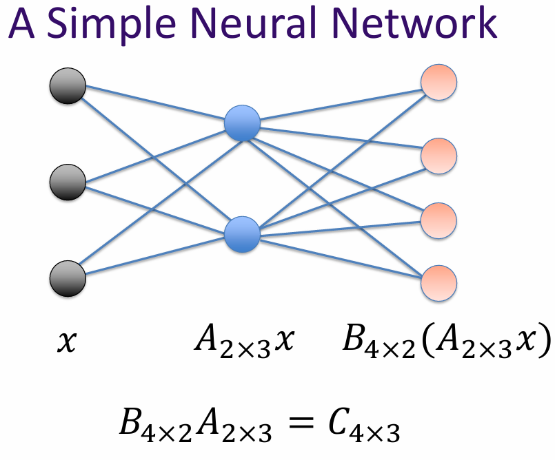
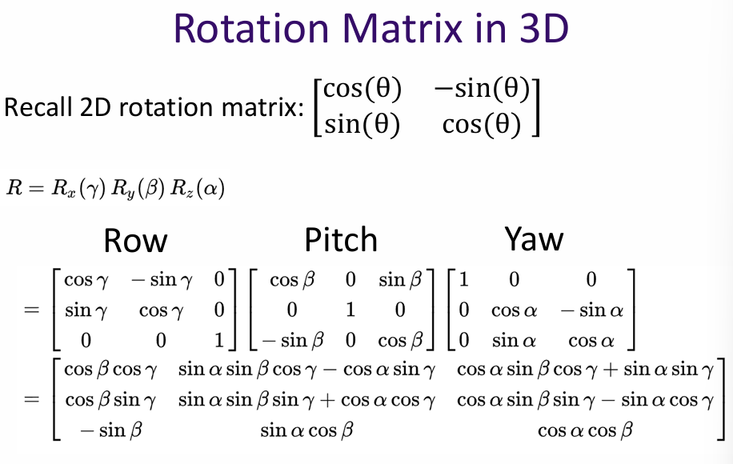
What is matrix? A matrix is a linear transformation represented in a structured format, typically as a rectangular array of numbers. In the context of AI and machine learning, matrices are used to represent and manipulate data, perform linear transformations, and facilitate various mathematical operations.
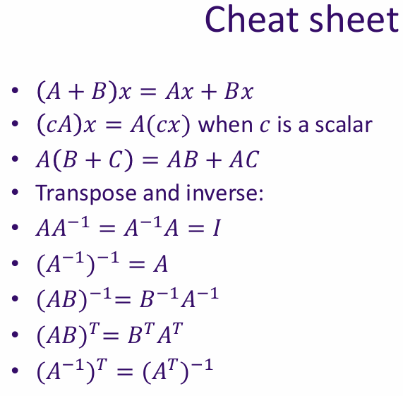